A partir del 2000 la franquicia recibio un rework tras obtener mayor presupuesto y un publico que los queria y con eso vinieron nuevos escritores y trabajadores que aportaron nuevos y unicos diseños a la franquicia y tambien historias
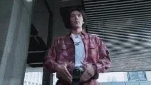
Kuuga: Un heroe sin miedo,Yuusuke Godai, tambien conocido como el hombre con 2000 habilidades toca un artefacto perdido y recibe el poder de Kuuga un guerrero legendario, ahora debe pelear contra los grongi una raza que busca extinguir a la humanidad


Agito:Shoichi Tsugami,un hombre amnesico, descubre que cuando unas formas de vida desconocidas atacan a la gente el se transforma en Agito el guerrero de la tierra destinado a detenerlas
 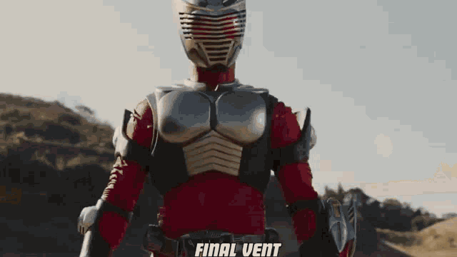
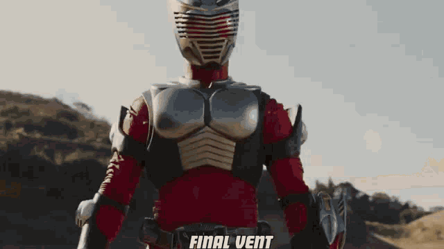
Ryuki:En nuestro mundo existe un mundo alternativo accesible a traves de las superficies reflectivas en el cual habitan criatras que se alimentan de humanos, Shinji Kido un periodista se encuentra involucrado en este mundo tras encontrar un cinturon que le permite viajar entre estos mundos, y tras obtener un contrato con un dragon que habitaba en esa realidad decide pelear contra los monstrous para proteger a la gente a diferencia de otros jinetes que buscan eliminarse entre si


Faiz:Takumi Inui es un hombre estoico y apatetico que recibe el sistema Faiz por ser compatible sin mas opcion decide pelear contra monstrous llamados orphnocs que dicen ser el puente entre los humanos y los animales


Blade:Kazuma Kenzaki trabaja para una organizacion eliminando a Undeads como Blade hasta que un dia su compañero Garren (verdadero nombre Tachibana) lo traiciona dejando que un monstruo elimine a los cientificos en la sede dejandolo a el solo para proteger a la gente y descubrir los secretos que ocultaban.


Hibiki:Hitoshi Hidaka es un hombre que desciende de un linaje de ogros que viven eliminando a monstruos que amenazan a la humanidad y solo se pueden eliminar con ataques de sonidd concentrado


Kabuto:Hace 7 años cayo un meteorito que llevaba dentro monstruos llamados Worms que tras madurar obtenian la habilidad de moverse casi a la velocidad de la luz, en el presente una organizacion llamada Zecter tiene contramedidas preparadas, pero solo un hombre puede detenerlos, Touji Sendo el auto proclamado "destinado a trazar el camino del cielo".
 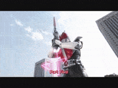
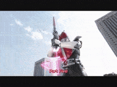
Den-O:Una de las temporadas mas populares, en Den-O seguimos la historia de Nogami Ryoutarou un joven con mala suerte que se encuentra el pase para el DenLiner un tren que viaja a traves del tiempo para protegerlo de monstruos llamados imagin que buscan cambiar la historia para causar a estragos a placer.Tras unir fuerzas con uno de ellos y bautizarlo con el nombre de Momotaros juntos pelean contra la amenaza como Den-O
 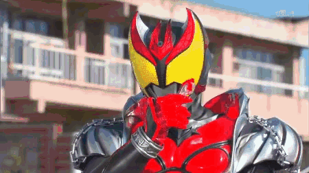
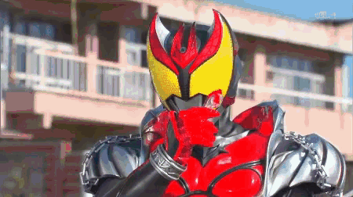
Kiva:En el mundo existen criaturas bajo el nombre de Fangire que consumen la vitalidad de humanos para existir, luchando contra esta amenaza un joven adulto llamado Wataru Kurenai pelea como Kiva mientras que al mismo tiempo intenta crecer como persona


Decade:Los mundos en los que viven los jinetes pasados se encuentran bajo amenaza y el unico que los puede salvar es el supuesto destructor de mundos Tsukasa Kadoya un jinete con el poder de usar el de todos los jinetes pasados como suyo
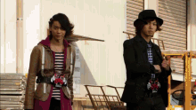
W(Double):En la ciudad de Fuuto han aparecido un nuevo tipo de contrabando las memorias de Gaea, USB que contienen las memorias de elementos, conceptos, animales y similares que la Tierra almacena de ellos y que al ser insertados en la gente los transforma en monstruos conocidos como Dopants. Depende de el detective Hidari Shotaro y su compañero Phillip un joven adulto con acceso a todo el conocimiento de la Tierra a transformarse en W(Double) y proteger su ciudad.
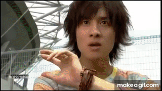 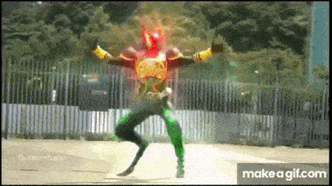OOO:Eiji Hino es un hombre sin casa que va de trabajo a trabajo y el mismo dia que trabajaba como guarida de seguridad en un museo de antigüedades en el sotano del edificio se abre un ataud conteniendo a los greed seres producto de la alquimia que viven para satisfacer sus deseos. Uno de ellos llamado Ankh que traiciono al resto reaparece como solo un brazo asi que ahora debe recuperar sus medallas si no quiere que sus excompañeros lo eliminen. Eiji que encontro una de sus medallas si saber que eran y al ser atacado junto a Ankh por un esbirro de los Greed unen fuerzas y Eiji se vuelve Kamen Rider OOO
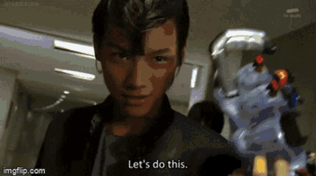
Fourze:Kisaragi Gentaro acaba de transferirse a un nuevo instituto con un objetivo, hacer 100 buenos amigos pero, va a encontrar la tarea dificil tras la aparicion de las astroswitches interruptores que al ser pulsados otorgan a su usuario una forma monstruosa basada en una constelacion. Tras obtener un cinturon con interruptores refinados se transforma en Fourze un jinete espacial con el objetivo de proteger su juventud y a sus amigos


Wizard:Si te permites caer a la desesperacion dejaras de ser tu, Haruto Souma fue llevado a ser sacrificado para un ritual llamado el Sabbat donde su desesperacion habria dado a nacer a un monstruo llamado phantom que lo habria suplantado pero el lo supero con esperanza. Al ser el unico superviviente un mago de blanco le otorga un cinturon y anillos con los que podra pelear como Wizard contra los otros phantoms que buscan llevar a los inocentes a la desesperacion
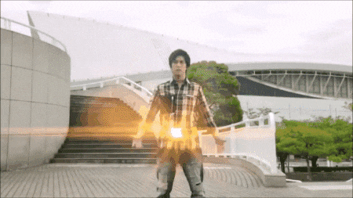
Gaim:La ciudad de Zawame es popular por sus escenarios al aire libre y las pandillas de jovenes que bailan en estos con la intencion de volverse los mas populares y los juegos de lockseeds(cerraduras que invocan seres llamados Inves con los que se baten en duelos), Kazuraba Kouta ex-bailarin del equipo Gaim termina encontrando una grieta que lo lleva al bosque de Yggdrasil donde se encuentran los arboles de los que se colectan las lockseeds y tambien un cinturon en la que cabria una de estas, poco despues le ataca un monstruo y una mujer le dice que si acepta el cinturon tendra que trazar un camino arduoso y lleno de dolor


Drive:Tonnari Shinosuke es un detective trabajando para el departamento de casos extraordinarios causados por los roidmudes: formas de vida artificiales con el poder de hacer que el tiempo vaya lento en ciertas zonas, tras casi volver a fallar en un caso, su compañera de trabajo Kiriko le otorga a Mr.Belt un cinturon que contiene la consciencia de su creador y le permite transformarse en Drive


Ghost:Tenkuuji Takeru es un joven que en su 18 cumpleaños muere tras ser atacado por seres espectrales llamados Gamma, al despertar un anciano le dice que si no hace nada morira de verdad pero que si decide pelear contra la amenaza Gamma y recolectar 15 eyecons heroicos le dejaran volver a la vida. De vuelta entre los vivos y con poderes espectrales Takeru tiene 100 dias antes de morir definitivamente


Ex-Aid:Emu Hojo lleva una doble vida, por un lado es un medico interino en el hospital local y por el otro el es M el genio gamer, lo cual lo hace elegible para portar el gamer driver, un cinturon que usa cartuchos de juegos para combatir la amenaza de los bugster,un virus que emergio de un videojuego y que amenaza a la humanidad


Build:Kiryu Sento, un hombre amnesico, dice ser un un genio sin igual y lo ha demostrado al pasar la prueba de admision del instituto de investigacion donde se guarda la caja de Pandora un artefacto que se trajo de Marte con una inmensa energia dentro que creo paredes que dividieron el pais en 3. Mientras intenta pasar el dia a dia Sento tambien tiene que derrotar a los Smash, gente que ha sido infusionada con un gas que los transforma en seres que atacan de forma indiscriminada y solo el puede purificarlos.


Zi-O:En el futuro la gente vive en temor de un jinete en especial, Ohma Zi-O el rey demonio, desesperado un miembro de la resistencia viaja al pasado para eliminarlo antes de que se vuelva una amenaza asi es como Tokiwa Sougo conocio a Geiz, el rebelde que intento eliminarlo, y a Tsukuyomi, su hermana y alguien que no cree que eliminarle sea la solucion. Asi se pasa el dia Sougo huyendo hasta que Geiz se distrae por un Another, grotescas y malvadas imitaciones de jinetes del pasado que buscan causar estragos y otro hombre llamado Woz que dice ser su sirviente del futuro le da un cinturon con el que transformarse para que pueda cumplir su destino de volverse el rey de todos los jinetes
Link a la principal